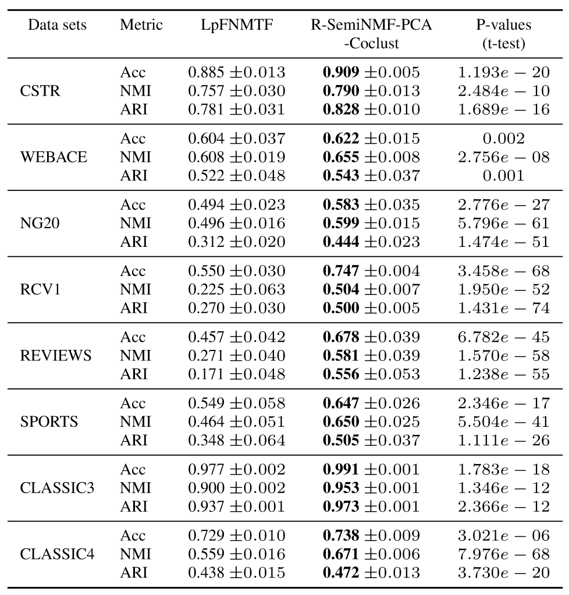
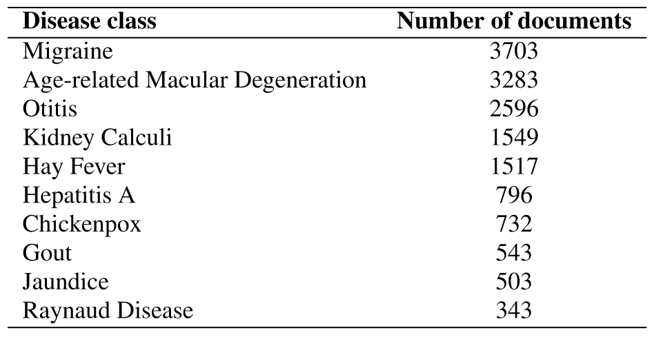

Allab, Labiod, and Nadif (2016) in CIKM
Research Paper
9 Jan 2024
Proposed solution: Integrating SemiNMF and PCA
Clustering vs. Co-clustering: Allab, Labiod, and Nadif (2016)
Form matrix \(M\) of size \((n+d)\times(n+d)\) from data \(X\): \[ M=\left[\begin{matrix} 0 & X \\ X^{\top} & 0 \end{matrix}\right] \]
Goal is minimizing: \[ \min_{G,S,Q}\| M-GSQ^{\top} \|^{2}\quad s.t.\quad G\geq 0, Q^{\top}Q=I \]
Introduce the normalized graph Laplacians in \(M\): \[ M=\left[\begin{matrix} \alpha L_{g} & X \\ X^{\top} & \beta L_{f} \end{matrix}\right] \] where \(\alpha\) and \(\beta\) are the regularization parameters used to control the contribution of \(L_{g}\) and \(L_{f}\) respectively.
The minimization problem is of the same form as before, but with updated \(M\).
\[ \min_{G,S,Q}\| M-GSQ^{\top} \|^{2}\quad s.t.\quad G\geq 0, Q^{\top}Q=I \]
Optimize by updating \(S\), \(G\), and then \(Q\) repeatedly until convergence.
Allab, Labiod, and Nadif (2016)

Allab, Labiod, and Nadif (2016)
Allab, Labiod, and Nadif (2016)
To illustate co-clustering capabilities on term clusters

Allab, Labiod, and Nadif (2016)
Dense bands of variables - terms cited in many docs - considered noise.
Allab, Labiod, and Nadif (2016)